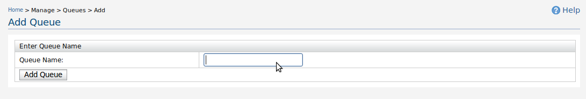
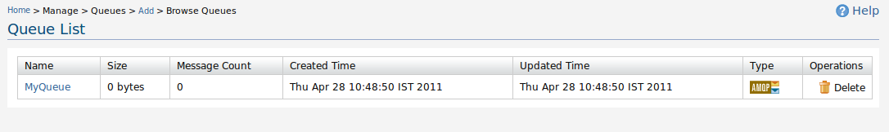

Figure 1: Add Queue
By providing a queue name, queue is created. Then users can list queues in queue list page.

Figure 2: Queue List
In queue list view, all the queues in the system is shown. More details on these queues can be found at queue details page.
Figure 3: Queue Details
In queue details page, all the information regarding the queue is listed. Following is a short description of each.
Name of the queue. Each message box has a queue, and its name is same as the message box name.
Size of the messages in queue in bytes.
Number of messages in queue.
Queue created timestamp.
Queue updated time. When queue is allowed new permissions, messages are push and pop from queue, this value is updated.
There are two types defined namely SQS and AMQP. When a message box is created, the queue type is SQS. And queue is created from admin console or another API like JMS, the queue type is AMQP. If queue type is AMQP, That can be deleted from queue list page. If queue type is SQS, that queue can be deleted in message box list page.
Consume and publish permissions are listed for each users. The queue created user is allowed both permissions. If a message box is shared with another user in message box view page, queue permissions are mapped as follows.